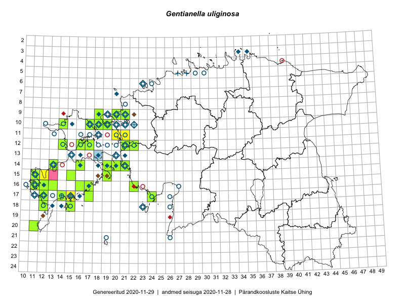

Gentianella uliginosa
Uuendatud: 2016-12-01
Kaardile koondatud taksonid: Gentianella uliginosa (Willd.) Börner

Kaart põhineb 20 kirjel, neist vaatlusi 18 ja eksemplare 2.
Viited andmebaasikirjetele
- Malle Leht: 2015-07-09: : ala
- Mari Reitalu, Oliver Parrest: 2015-07-24: 14-13: ala
- Sirje Azarov, Mari Reitalu: 2015-10-20: 17-14: GPS punkt
- Triin Reitalu, Mari Reitalu: 2015-08-09: 16-11: ala
- Triin Reitalu, Mari Reitalu: 2015-08-09: 16-11: GPS punkt
- Mari Reitalu, Oliver Parrest: 2015-07-24: 14-13: GPS punkt
- Hanna-Eliisa Luts, Tõnu Ploompuu: 2015-08-13: 11-21: ala
- Mari Reitalu, Triin Reitalu: 2015-08-09: 16-11: ala
- Hanna-Eliisa Luts, Tõnu Ploompuu: 2015-08-13: 11-20: ala
- Rein Kalamees, Eerik Leibak: 2016-06-16: 22-38: ala
- Maret Gerz, Liina Oja: 2016-06-15: 23-37: ala
- Maret Gerz, Liina Oja: 2016-06-17: 18-43: ala
- Vivika Väli, Ülo Väli: 2015-07-27: 20-41: ala
- Toomas Kukk, Meeli Mesipuu, Johannes Kõdar: 2016-08-11: 17-15: GPS punkt
- Meeli Mesipuu, Toomas Kukk, Mari Reitalu: 2016-10-07: 15-11: ala
- Toomas Kukk, Meeli Mesipuu: 2016-10-08: 15-12: ala
- Meeli Mesipuu, Toomas Kukk, Johannes Kõdar: 2016-08-11: 17-15: ala
- Meeli Mesipuu, Toomas Kukk: 2016-10-18: 15-12: GPS punkt
- Peedu Saar: 2015-09-10: 16-17: GPS punkt
- Eerik Leibak: 2015-09-14: 16-16: GPS punkt